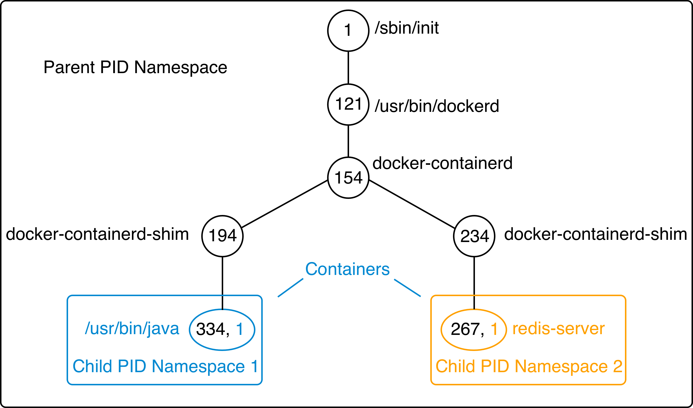
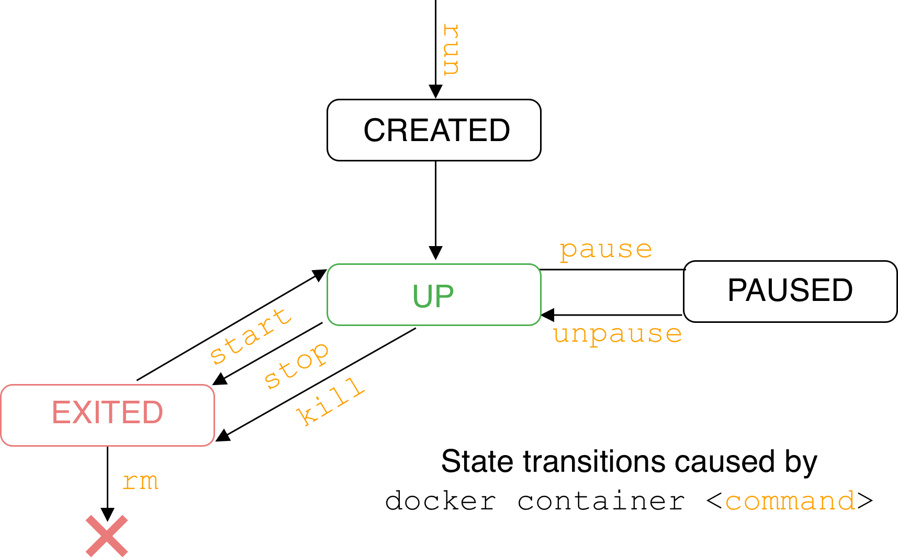

Discussion: Running Containers
What assurances would you need to run a process on an arbitrary host? Consider
- Hostile environments
- Required resources
Learning Objectives
By the end of this module, learners will be able to
- Describe what a container is in terms of processes and isolation tools
- Use the key commands for interacting with Docker containers
Containers are Processes
Containers are processes sandboxed by
- Kernel namespaces
- Control Groups
- Root privilege management & syscall restrictions (Linux)
- VM isolation (Windows)
Linux Kernel Namespaces
- DEFAULT
- Process IDs
- Network stacks
- Inter-process communications
- Mount points
- Hostnames
- OPTIONAL
Linux PID Kernel Namespace

Optional Linux Isolation Features
- Control groups: limit memory & CPU
- Root privilege management: whitelist root powers
- System call management: whitelist available system calls
- Linux Security Modules: mandatory filesystem access control
 Instructor Demo: Process Isolation
Instructor Demo: Process Isolation
See the demo
In the Exercises book.
Exercise: Container Basics
Work through
- Running and Inspecting a Container
- Interactive Containers
- Detached Containers and Logging
- Starting, Stopping, Inspecting and Deleting Containers
In the Exercises book.
Container Lifecycle

Container Logs
- STDOUT and STDERR for a containerized process
docker container logs <container name>
Container Basics Takeaways
- Single process constrained by kernel namespaces, control groups and other technologies
- Private & ephemeral filesystem and data
Further Reading